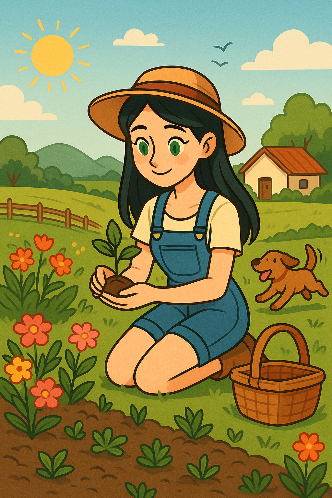

Mulheres no Campo: Força que Alimenta o Brasil
Dando visibilidade à jornada de Lavinya e a milhares de agricultoras.
20% da Força de Trabalho
No Brasil, as mulheres representam cerca de 20% da força de trabalho no agronegócio, desempenhando papéis cruciais em todas as etapas da cadeia produtiva.
Liderança e Gestão
Muitas agricultoras são responsáveis pela gestão e tomada de decisões nas propriedades, conciliando o trabalho na lavoura com as responsabilidades domésticas e familiares.
Desafios e Preconceito
Apesar de sua contribuição vital, mulheres no campo ainda enfrentam desafios como o acesso limitado a crédito, capacitação, equipamentos e, infelizmente, preconceito de gênero.
Sustentabilidade e Inovação
Elas são frequentemente pioneiras em práticas sustentáveis, na diversificação da produção e na busca por inovações que beneficiam toda a comunidade rural.
Esta é a realidade que buscamos destacar através da história de Lavinya.
A Jornada de Lavinya: Suas Escolhas Definem o Caminho
Mergulhe no dia a dia de Lavinya, uma agricultora dedicada. Suas decisões a guiarão por desafios climáticos, pragas, gestão financeira e momentos de pura conexão com a terra. Cada escolha importa.
Mulheres no Campo: Uma História de Inspiração
A jornada de Lavinya é um tributo à força e resiliência das mulheres agricultoras do Brasil.
Através das escolhas de Lavinya, pudemos mergulhar nos desafios diários, na paixão pela terra e na importância vital do trabalho feminino na agricultura familiar e no agronegócio.
Elas são a base que alimenta nossas mesas, inovam na produção sustentável e garantem o futuro do campo brasileiro. Cada semente plantada, cada animal cuidado, cada decisão tomada, reflete a dedicação dessas heroínas anônimas.
Esperamos que a história de Lavinya tenha inspirado você a valorizar ainda mais o trabalho no campo e a reconhecer o papel insubstituível das mulheres nessa jornada!